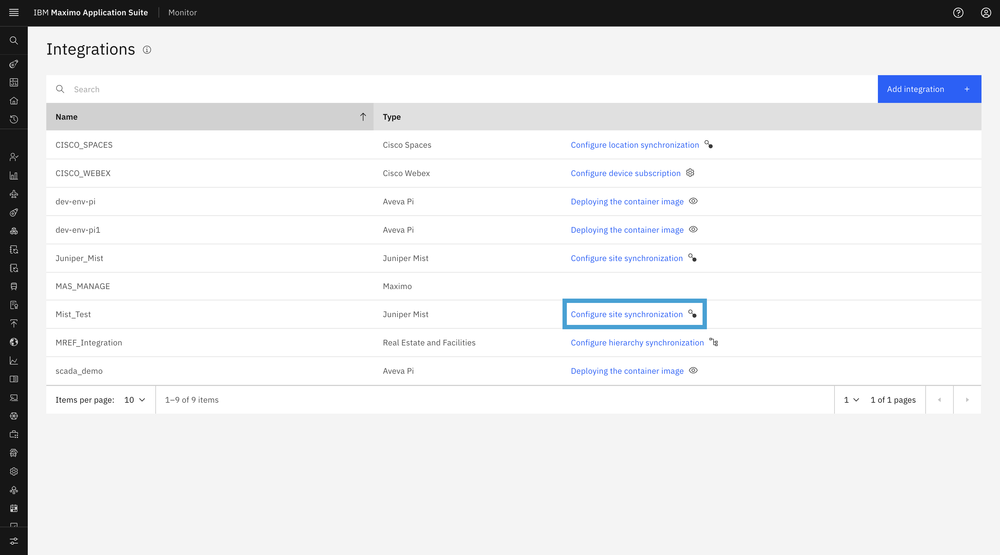
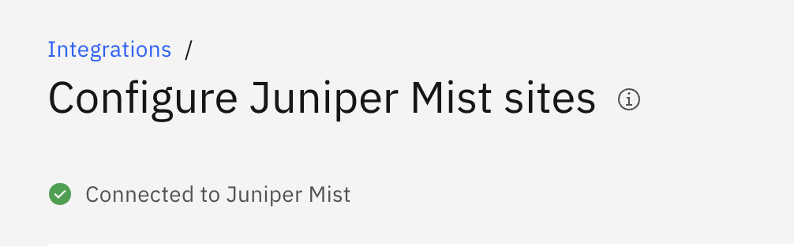
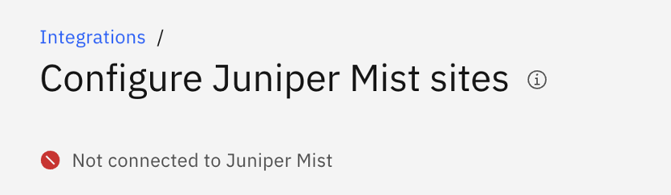
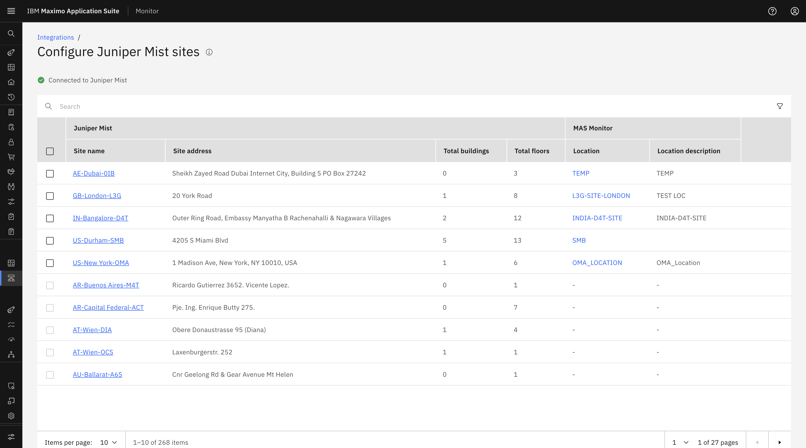
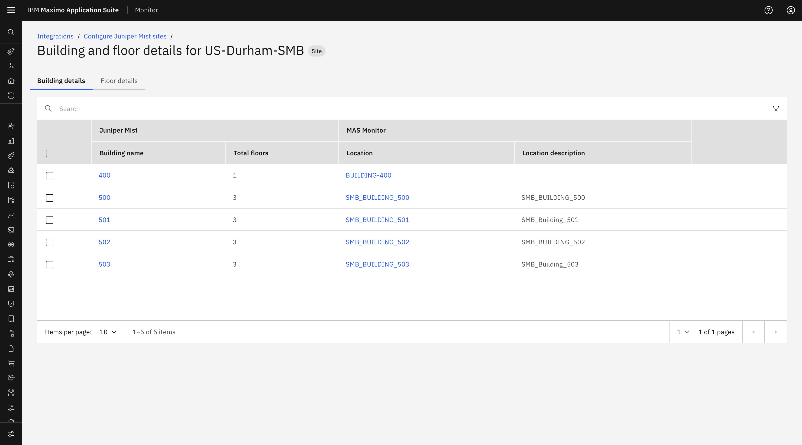
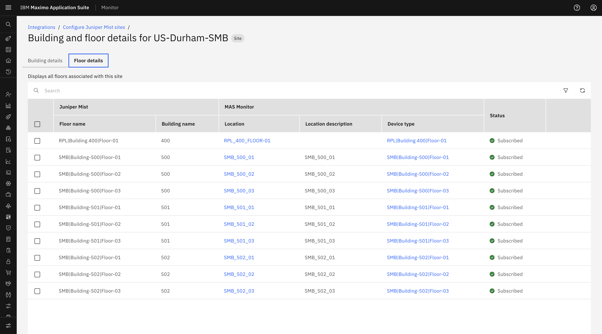

Objectives
In this Exercise you will explore the synchronized Juniper Mist Sites, Buildings, and Floors, and understand the connection status indicators.
Before you begin:
This Exercise requires that you have:
- Completed the pre-requisites required for all labs
- Completed the previous exercises
Configuration & Sync – Sites, Buildings & Floors
Once the Maximo–Juniper Mist configuration is successfully completed, IBM MAS Monitor establishes a connection with the configured Juniper Mist organization.
To access the site synchronization page:
- Navigate to the Integrations list page in IBM MAS Monitor.
- Locate your Juniper Mist integration entry in the list.
- Click the Configure site synchronization link in the corresponding row.

- The system internally triggers a scheduler to fetch and synchronize Juniper Mist hierarchy (Site, Building, Floor) from the configured organization.
- The Mist hierarchy synchronization may take some time after the configuration is completed, so the Site/Building/Floor may not appear immediately.

Connection Status Indicators
At the top of the Juniper Mist Site Synchronization page, check the connection status:
-
Connected to Juniper Mist: Indicates that a successful connection has been established with Juniper Mist and site data can be retrieved.

-
Not Connected to Juniper Mist: Indicates that the Mist instance is currently unreachable or the connection could not be established.

Navigating Synchronized Sites, Buildings, and Floors
The screen displays all Mist sites synchronized from the configured Mist organization, along with their buildings and floors.
1. Mist Site List
Displays all sites retrieved from Juniper Mist, including the Site Name, Mapped Location status, and Subscription Status.

2. Building Details
- Click the Juniper Mist Site link from the Mist Site List page.
- The system redirects to the Building and Floor Details page for the selected Mist Site.
- The screen displays all Mist Buildings in the Building details tab associated with the selected Mist Site, along with their current mapping status.

3. Floor Details
- The Floor Details page can be accessed from the Floors tab on the Site Details page, displaying all floors associated with the site and building.
- Alternatively, floor details can be accessed from the Building Details page by clicking the Building Name link in the Building Details table.
- The screen displays all Mist Floors, along with their current Mapped location and Subscribe Status.
